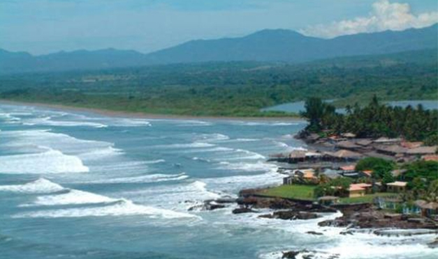
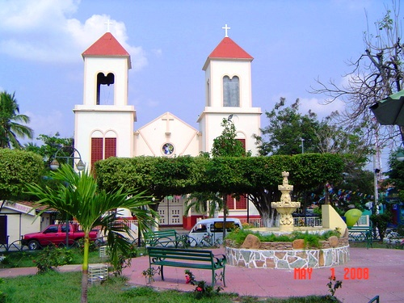

Geografia

La Paz es uno de los catorce departamentos que conforman la República de El Salvador. La cabecera departamental es la ciudad de Zacatecoluca. El departamento de La Paz se halla situado en el sector centro-sur de El Salvador. Sus límites son el lago de Ilopango y el departamento de Cuscatlán al Norte, el departamento de San Vicente al NorEste y Este, los departamentos de San Salvador y La Libertad al Oeste y el Océano Pacífico al Sur. El relieve del departamento de La Paz está determinado por una región montañosa, que lo ocupa en su mayor parte, y la llanura costera. La primera está formada por las estribaciones de la cordillera Central (La Libertad - San Salvador - San Vicente), perteneciente al Eje volcánico salvadoreño-guatemalteco y se encuentra atravesada por varios valles fluviales. Su máxima cumbre es el volcán San Vicente o Chichontepec, junto al cual destacan los cerros El Volcancito y La Carbonera (los únicos que superan los 1,000 m). La llanura costera, cuya anchura oscila entre los 10 y 20 km, es una planicie aluvial atravesada por una gran cantidad de ríos, en la que se han formado numerosos esteros.
Turismo

En La Paz encontramos encontramos los ríos que forman parte de las tres cuencas más importantes del país: los ríos Pupuluya-Comalapa, río Jiboa y los ríos Jalponga-El Lempa; el lago de Ilopango (72.0 Km2); el cerro Volcancito (1,300 metros de altura sobre el novel del mar); el volcán de San Vicente o Chinchontepeque con más de 2,181 metros de altura sobre el novel del mar. Algunas de las cosas que se producen en el departamento de La Paz son la caña de azúcar, tabaco, cítricos, café y algodón; también se fabrican productos lácteos; y productos de la industria alfarera. Este departamento es uno de los lugares más turísticos de El Salvador, debido a que en él se encuentran algunas playas y hoteles.
División administrativa

Entre otros...
Lugares turísticos de Cabañas
